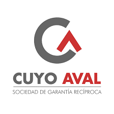
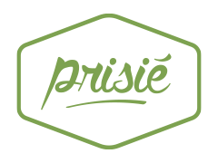
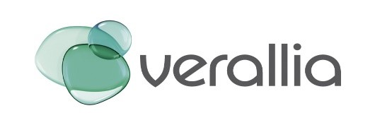
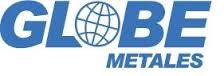
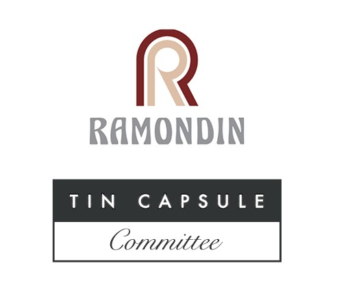
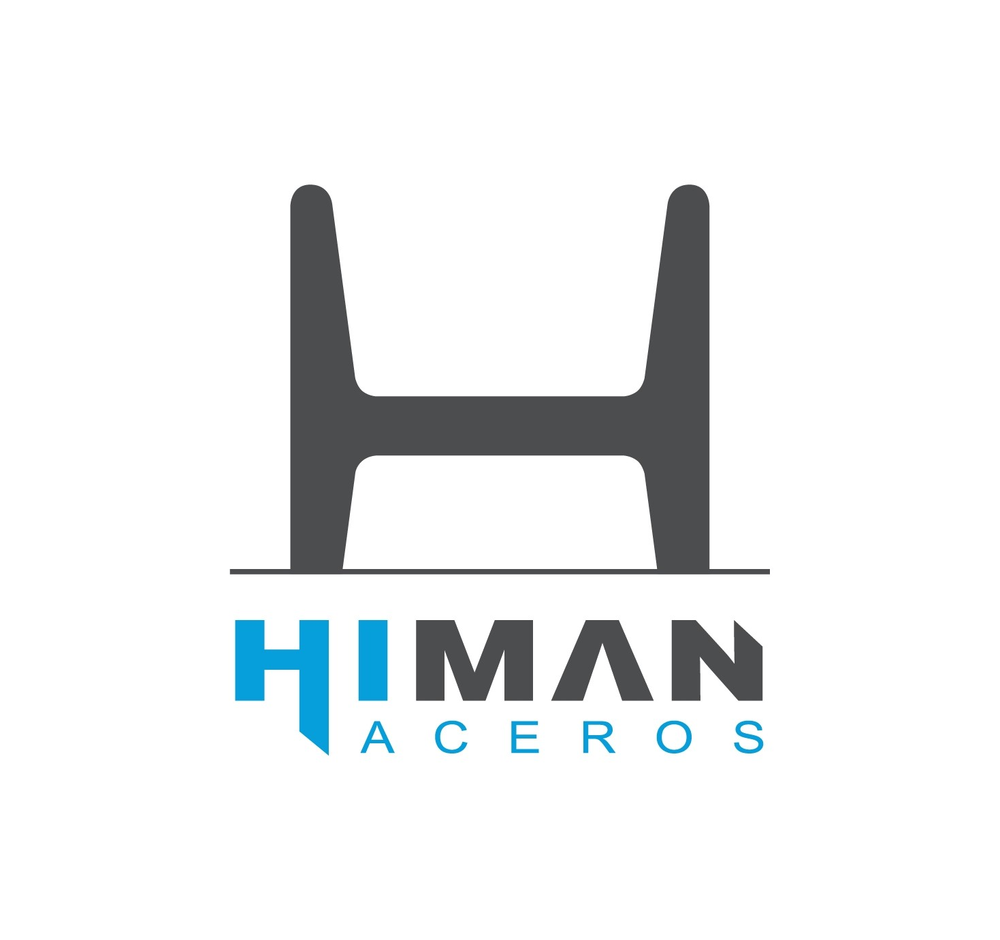

Ingeniero Industrial industrial con vision generalista. Fuerte experiencia en gestion de proyecto de mejora de procesos.
Consultoria en procesos para desarrollo del sistema de gestión SGR Cuyo Aval
- Relevamiento de procesos
- Optimización de procesos
- Relevamiento de requisitos del sistema
- Diagramas de relaciones
- Maquetacion de pantallas
Acompañamiento y capacitación en diagnóstico, relevamiento y optimización de procesos. Identificación de oportunidades de mejora y ejecución de proyectos de mejora continua.
Especialidades: Lean Manufacturing, Optimización Procesos, Project Management.
 Empresa familiar dedicada a la elaboración de panificados con diez puntos de venta ubicados en la provincia de Mendoza – Argentina.
Principales responsabilidades:
- Asegurar y mantener un funcionamiento fluido de la empresa
- Implementar la gestión por procesos
- Rediseñar y optimizar la cadena de suministros
Encargado de coordinar y garantizar la operación de distribución a los clientes de los distintos canales de comercialización (locales propios, franquiciados, circuitos de preventa, E-Commerce).
Principales responsabilidades:
- Asegurar y organizar los inventarios para maximizar el nivel de servicio.
- Optimizar costos relacionados con la operación.
- Desarrollar e implementar prácticas de mejora y procedimientos para optimizar la gestión del área.
- Organizar y desarrollar el equipo de trabajo a cargo impulsando la mejora en la performance de los indicadores.
Consultoría y gestión de proyectos de mejora continua.
Principales proyectos dirigidos:
- Dirección y Expedición de proyectos del Programa Excelencia Empresarial (Verallia Argentina)
- Coordinación de proyectos TPM MA (Verallia Argentina)
- Diagnóstico Procesos de Producción (Globe –Ultracore)
- Proyecto de expansión de nuevos consultorios (Clínica de Cuyo)
- Desarrollo de herramientas de gestión de información (Tablero de Control)
- Generación de Aplicaciones de Business Intelligence (QlikView, Pentaho)
- Implementación de Sistema de Calidad (Aceros Himan)
   Encargado de dirigir el equipo de proyecto en la planificación, ejecución, control y cierre de contratos de equipos nuevos.
Responsabilidades:
- Actuar como único punto de contacto del cliente para órdenes asignadas.
- Responsable por la ejecución de proyectos para establecer y monitorear cronogramas, variaciones de costos y riesgos asociados.
- Aseguramiento del cumplimiento en tiempo y forma de hitos financieros.
- Comunicar a tiempo, y en forma clara y profesional a todos los niveles organizacionales tanto internamente como con clientes.
- Manejo diario de múltiple proyectos.
- Asegurar el entendimiento y cumplimiento de las especificaciones del proyecto.
- Manejo del status de documentación asociada al proyecto.
- Coordinación de áreas funcionales para la resolución de issues internos / externos.
- Presentación formal de informes de avance de proyectos.
- Desarrollo de planes de contingencias de acuerdo a necesidades.
- Responsable del manejo de garantías e issues de campo.
Gestión del portafolio de proyectos de acuerdo a procesos y metodologías PMI.
Portafolio promedio de proyectos por un valor de USD 20M.
- PMP Training Ago-Nov 2012
- MS-Project Server Sep 2011
Responsable de brindar soporte al departamento de “Customer Service / Order Acquisition” mediante el cálculo de costos y precios de venta de proyectos de acuerdo con los objetivos de la compañía.
- Capacitación para mandos medios: “Autoconocimiento para el desarrollo” May 2011 (8 hs)
- Capacitación para mandos medios: “Toma de decisiones y Resolución de Problemas” Dic 2010 (8 hs)
- Capacitación para mandos medios: “Gestión de Cambios Orientado a resultados” Dic 2010 (16 hs)
- Six Sigma Green Belt Training 2010 (80 horas)
- Pros+ Full User Training 2009 – Etten Leur, Holanda
- Advance procurement 2008 (8 horas)
- Revenue recognition/International commercial terms 2008 (8 horas)
- Project Management Workshop 2008 (32 horas)
Programa Jóvenes Profesionales 2008
El programa incluyó 4 meses de rotación por las distintas locaciones y áreas funcionales de la empresa, con el objetivo de adquirir una visión integral del proceso y además conocer las particularidades de cada mercado.
- Desarrollo de proyecto para la mejora del share de inventario expuesto en puntos de venta.
- Análisis de indicadores de mercado.
- Participación en la confección del Business Plan Cuyo 2008.
Consultoria en procesos
- sflñkjsflksajflñsakj
Nullam vel sem. Nullam vel sem. Integer ante arcu, accumsan a, consectetuer eget, posuere ut, mauris. Donec orci lectus, aliquam ut, faucibus non, euismod id, nulla. Donec vitae sapien ut libero venenatis faucibus. ullam dictum felis eu pede mollis pretium. Pellentesque ut neque.
Nullam vel sem. Nullam vel sem. Integer ante arcu, accumsan a, consectetuer eget, posuere ut, mauris. Donec orci lectus, aliquam ut, faucibus non, euismod id, nulla. Donec vitae sapien ut libero venenatis faucibus. ullam dictum felis eu pede mollis pretium. Pellentesque ut neque.
Nullam vel sem. Nullam vel sem. Integer ante arcu, accumsan a, consectetuer eget, posuere ut, mauris. Donec orci lectus, aliquam ut, faucibus non, euismod id, nulla. Donec vitae sapien ut libero venenatis faucibus. ullam dictum felis eu pede mollis pretium. Pellentesque ut neque.